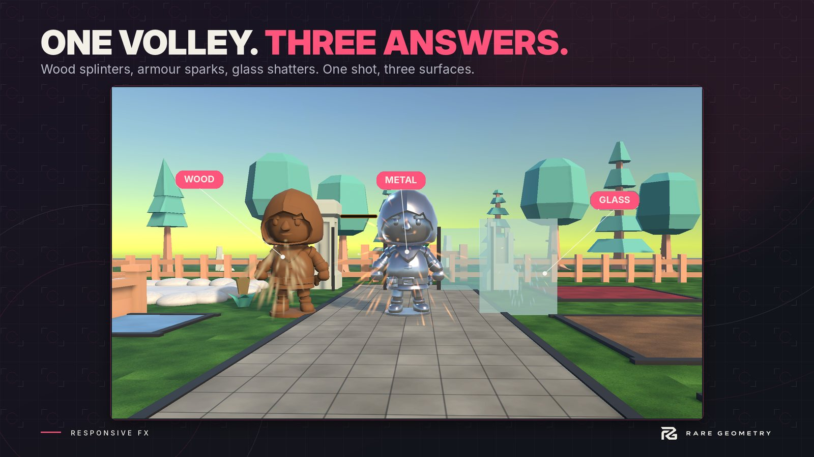

Quick start
Four short paths. Do the one you need first; they work together or alone.


1. Hits (about two minutes) #
- Select an enemy, a prop or a folder of prefabs.
- Open Tools > Responsive FX > Hits > Setup Wizard, pick a preset, press Add Hit Feedback.
- Where your game deals damage, add one line:
HitFeedback.Hit(target, 25f); // a hit for 25
HitFeedback.Hit(target, new HitInfo(60f, HitKind.Critical).At(hitPoint)); // a critical, at a point
Your own health script keeps control of damage and death. See Hits.
2. Footsteps (about two minutes) #
- Select your character.
- Open Tools > Responsive FX > Steps > Setup Wizard and press Add Footsteps.
- Press Play and walk. The wizard guessed each material's surface from its name; change any guess in step 3 of the wizard, or later in the Surface Library.
See Steps.
3. Contacts: bullets, bumps and anything else #
A crate, a bottle, a barrel: add the Physics Contacts component to anything with a Rigidbody. It now thuds, slides, rolls and breaks on whatever it touches, with no code.
A bullet or a ray: one line where your shot lands.
if (Physics.Raycast(origin, direction, out var hit, range))
Contacts.PlayHit(hit); // the surface it hit answers: sound, effect, mark, noise for AI
Anything else (a door slamming, a spell landing):
Contacts.Play(ContactKind.Interaction, door, point, normal, intensity: 1.5f);
See Contacts.
4. Any other moment: the Feedback Player (about a minute) #
- Select a pickup, a button, a door or your player and choose Tools > Responsive FX > Add Feedback Player.
- Press Add a ready moment (Pickup, Jump, Landing, Button press, Explosion and more), or Add feedback to build your own list from 31 kinds: sounds, camera shake, freeze frames, flashes, punches, particles, text.
- Play it from a UnityEvent (pick
FeedbackPlayer.Play), with a Feedback Trigger and no code, or in one line:
GetComponent<FeedbackPlayer>().Play();
See Feedback Player.
Make each surface yours #
Open Tools > Responsive FX > Impact Lab. The first tab is a grid: surfaces down the side, kinds of contact across the top. Click a cell to hear it and edit it. The samples already answer steps, hits, bullets, bumps, slides, rolls and breaks on wood, stone, metal, glass, grass, gravel, dirt, sand, snow, mud, leaves, carpet, water and ice.
Press Make my own copy in the footstep wizard (or copy the sample library yourself) before you change the samples, so an update never overwrites your work.
Let players choose #
Add a Feedback Options Panel to any object and call Show() from your menu. In Impact Lab's Players tab you
decide which options players see and which are fixed. See Player options and screens.
When something does not play #
- Impact Lab > Trace lists every contact while you play: what it hit, which rule decided the surface, what played and what was held back, with the reason in plain words.
- Why No Feedback? (hits) and Why No Footstep? (steps) check one object and offer a fix.
- Tools > Responsive FX > Diagnostics checks the whole scene.